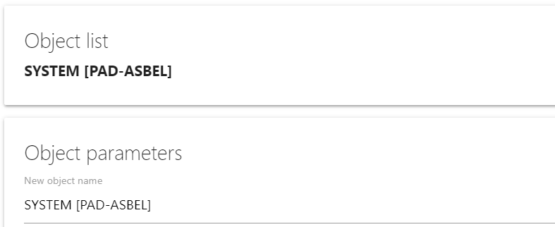
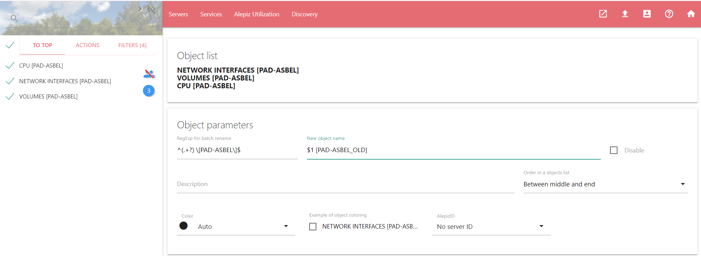
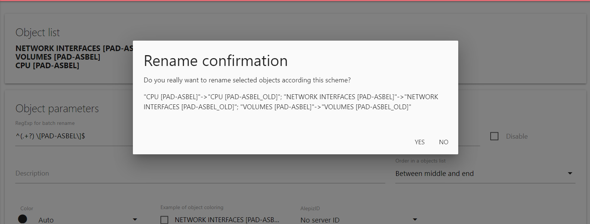
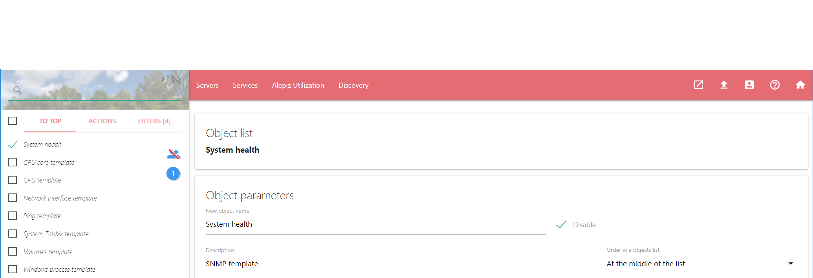
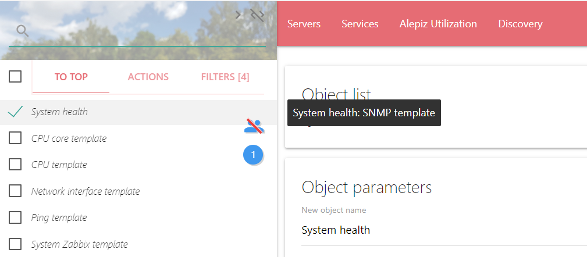
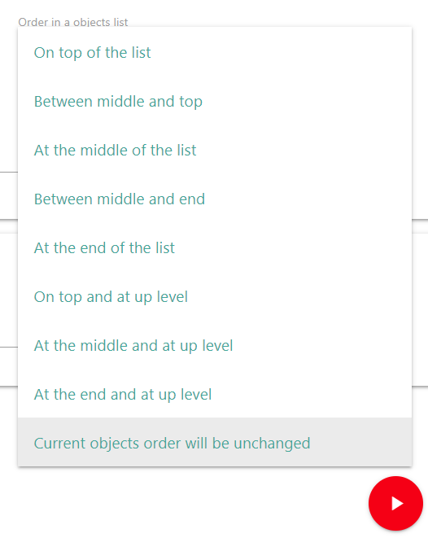
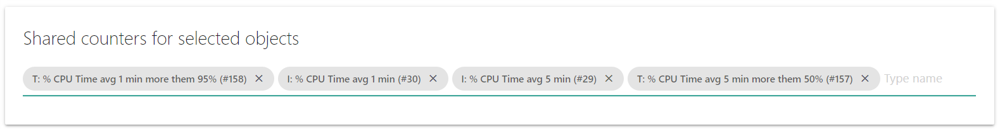
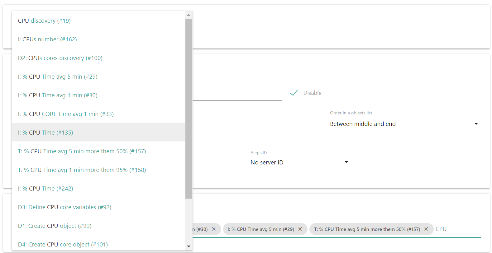

Возвращаемое значение: разделенными запятыми object ID (идентификаторы редактируемых объектов из базы данных).
Описание полей ввода
Objects list
Для редактирования вам необходимо выбрать один или несколько объектов в системном меню Objects. Выбранные объекты отобразятся в поле Objects list
New object name и Regular expression for objects batch rename (для нескольких объектов)
Если вы выбрали один объект и хотите его переименовать, измените его имя во поле New object name. На примере ниже объект SYSTEM [PAD-ASBEL] переименовывается в объект SYSTEM [PAD-ASBEL_OLD]
Если вы выбрали несколько объектов, их так же можно переименовать с помощью регулярного выражения. Синтаксис регулярного выражения для замены имен объектов аналогичен синтаксису функции replace(regExp, newSubstr) в JavaScript.
В поле Regular expression for objects batch rename водится первый аргумент функции - регулярное выражение regExp, соответствующее именам выбранных объектов. Регулярное выражение будет дополнено флагами "i" (игнорирование регистра при сопоставлении) и "g" (глобальное сопоставление).
Поле New object name заполняется вторым аргументом функции - newSubstr. В этом поле можно использовать специальные шаблоны замены:
| Шаблон | Замена |
|---|---|
| $$ | Вставляет символ доллара «$». |
| $& | Вставляет сопоставившуюся подстроку. |
| $` | Вставляет часть строки, предшествующую сопоставившейся подстроке. |
| $' | Вставляет часть строки, следующую за сопоставившейся подстрокой. |
| $n или $nn | Символы n или nn являются десятичными цифрами, вставляет n-ную сопоставившуюся подгруппу из объекта RegExp в первом параметре. |
На примере ниже объекты NETWORK INTERFACES [PAD-ASBEL], VOLUMES [PAD-ASBEL], CPU [PAD-ASBEL] с помощью регулярного выражения replace(/^(.+?) \[PAD-ASBEL\]$/ig, "$1 [PAD-ASBEL_OLD]"). переименовываются в объекты NETWORK INTERFACES [PAD-ASBEL_OLD], VOLUMES [PAD-ASBEL_OLD], CPU [PAD-ASBEL_OLD]
После запуска действия с переименованием нескольких объектов появится окно, в котором можно проверить правильность составления регулярного выражения. Только после нажатия кнопки "YES" будет выполнено переименование объектов.
Disable object
Можно отключить объекты. В этом случае сбор данных со счетчиков, подключенных к объектам, производиться не будет. В системном меню Objects отключенные объекты обозначаются курсивом.
Description for objects
С помощью этого поля можно ввести описание для новых объектов. Подсказка с описанием объекта появится, если в системном меню Objects навести курсор на объект. Если выбрано несколько объектов и это поле оставить пустым, описание объектов не изменится
Order in a objects menu for all selected objects
Поле позволяет установить сортировку, которая влияет на порядок отображения объектов в системном меню Objects. Если для объектов установлена одинаковая сортировка, они сортируются по алфавиту. Если выбрано несколько объектов, и выбрана сортировка Current objects order will be unchanged, сортировка объектов не изменятся.
Объекты с разной сортировкой сортируются по следующим правилам:
Сортировка объектов, находящихся на верхнем уровне
Объекты с сортировкой из таблицы ниже будут располагаться на самом верхнем уровне списка объектов. Для того, чтобы увидеть эти объекты в списке нужно в системном меню Objects нажать на "TO TOP". Если эти объекты включить в группу, они также будут отображаться в этой группе.
| Сортировка | Описание |
|---|---|
| On top and at up level | На самом верху списка объектов и на самом верхнем уровне объектов |
| At the middle and at up level | В середине списка и на самом верхнем уровне объектов |
| At the end at up level | В конце списка и на самом верхнем уровне объектов |
Сортировка объектов, включенных в другие объекты
Объекты с сортировкой из таблицы ниже должны быть включены в какую-то группу. Для доступа к такому объекту необходимо в системном меню Objects зайти в группу объектов, в которой находится требуемый объект. Если такому объекту не присвоить никакую группу, объект невозможно будет найти с помощью навигации по системному меню Objects. В этом случае объект может быть отображен в списке только если ввести его имя в строке поиска объектов. Строка поиска объектов находится над системным меню Objects и активируется когда активна вкладка OBJECT.
| Сортировка | Описание |
|---|---|
| On top of the list | На самом верху списка объектов |
| Between middle and top | Между верхними объектами и объектами в середине списка |
| At the middle of the list | В середине списка объектов |
| Between middle and end | Между объектами в середине списка и объектами в конце списка |
| At the end of the list | Внизу списка объектов |
Color, Shade и Example of object coloring
С помощью Color и Shade можно задать цвет и оттенок этого цвета для объекта. Example of object coloring покажет, как будет выглядеть объект в списке объектов.
AlepizID
Используется для обозначения принадлежности объекта определенному серверу ALEPIZ. Данные для объекта будут собираться только на сервере, которому принадлежит объект. Можно использовать одну конфигурацию для несколько серверов ALEPIZ и с помощью этого свойства выбирать, какой из серверов будет собирать данные для объекта. Список всех идентификаторов находится в БД ALEPIZ. для текущего Alepiz идентификаторы можно указать в файле конфигурации Описание настроек Counter processor сервера server.json с помощью параметра AlepizNames.
Shared to selected objects linked counters
В этом поле перечислены общие счетчики, подключенные ко всем выбранным объектам. Если выбран только один объект, будут показаны все подключенные к нему счетчики.
Нажав на крестик рядом с названием счетчика можно отключить его от объекта. Если начать вводить в строку ввода имя счетчика, появится контекстное меню с названиями счетчиков. Если выбрать один из них, то после выполнения действия он будет подключен к выбранным объектам.
Для отключения обработки подключенных и отключенных счетчиков в задачах, параметру linkedCountersIDs необходимо присвоить значение "0". Например, это может потребоваться для автоматического переименования объектов.
